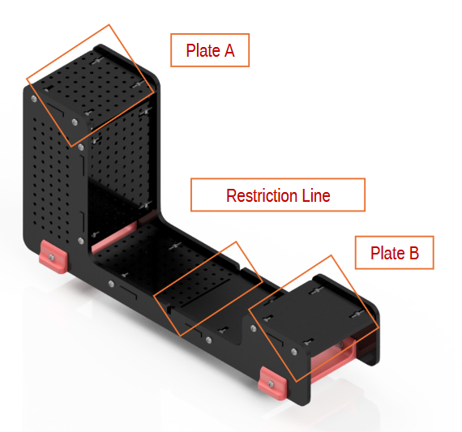

I was quite confident in my abilities in coding, since I had experience building my own side projects before. I was not as confident in
my CAD abilities: unlike some of the people I had befriended, Inventor was my first taste of a solid modeling software, and while I finished coursework (Fig. 1.) with ease, I was unsure
if I would be able to keep up with my group members.

Looking back, I should have practiced a bit more. I was a bit smug, thinking that my coding prowess would be enough for the project.
I did do some practice with Python, as my skill had decreased over summer vacation and lack of time, working some on my side projects and stretching my muscles on coursework.
■
Fig. 1: 'chenj692_GD4.ipt.' A rudimentary schoolwork CAD submission from early October. Took me around 4 hours- far too long.
Problem:
The problem we were tasked to solve was about an airport. The airport was having trouble sorting checked bags for outgoing flights. The project had a
software and hardware component: we were tasked with creating modular programs using
Python to perform data validation and analysis, and then design a mechanism to transport luggage from Point A to Point B (Fig. 2.).

Fig. 2: The challenge.
The catch was that equidistant from both Points lay a Restriction Line, past which we were not allowed to build or extend beyond until our contraption began to move. We were granted two
actuators: a rotary actuator, and a linear actuator.
Brainstorming:
Immediately, my group began to think of possible solutions to this problem. We conferred over possible mechanisms using each design, and then both. When we reconvened days later, each member had
come up with a design for each actuator. After further conferring, we settled on two possible designs,
These would thus be dubbed the 'bucket' and the 'elbow'.